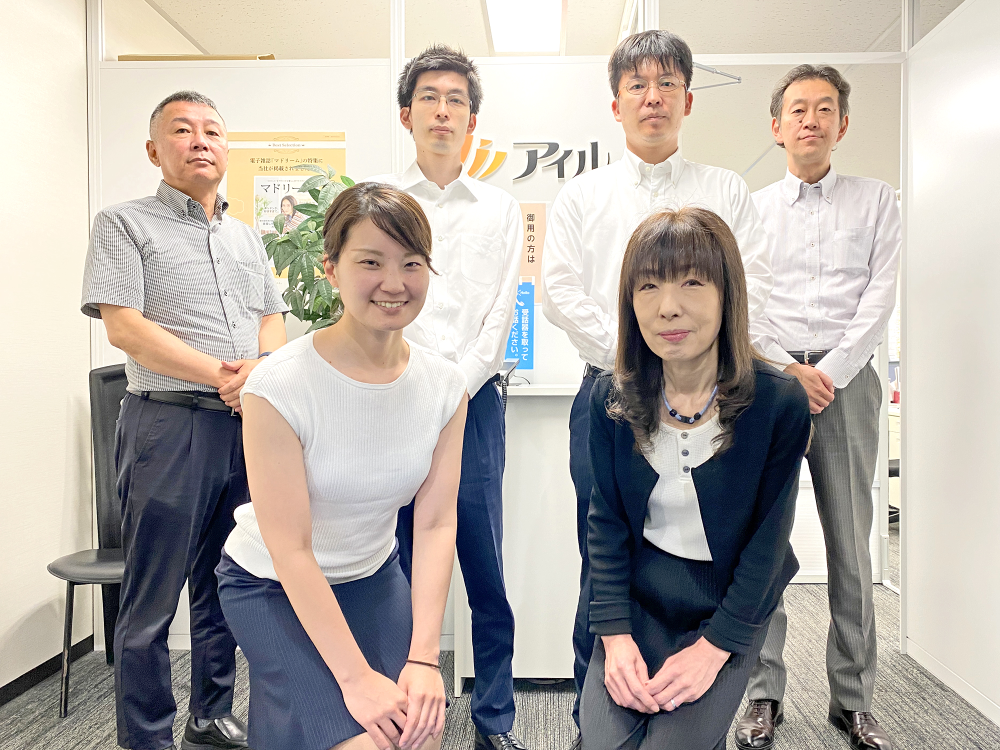

㈱アイル 賃貸管理課

加津 繁子 （係長）
資格
普通自動車運転免許証
日商簿記２級
担当内容
不動産管理
趣味
音楽鑑賞
自己紹介
管理物件をより良き物件にするため日々奮闘しています。
皆さまのお問い合わせをお待ちしております。
藤 卓郎（スタッフ）
資格
宅地宅建取引士
日商簿記２級
全国暗算検定2級
日本漢字能力検定2級
業務内容
入居申込み受付
空室物件の情報提供
空室物件のWEB掲載
入居者対応
趣味
野球観戦
（もちろんホークスです！）
ゲーム
自己紹介
最新の物件情報、空室情報を余すことなく皆さまへお届けしてまります。
弊社取り扱い物件へのお問い合わせお待ちしております！
松井 恵（スタッフ）
資格
宅地宅建取引士
証券外務員２種
業務内容
賃貸借契約書の作成・審査
仲介業者さまご訪問
物件の確認・写真撮影
趣味
ヨガ、K-POP、猫、旅
自己紹介
2023年6月にアイルに入社いたしました！自分ができることを常に考え、みなさまのお力になれるよう頑張っております。
これからもよろしくお願いいたします！